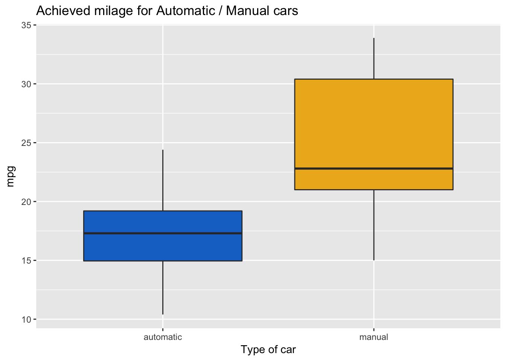

Chapter 2 Tests and inferences
Definitely the first thing to be familiar with while doing machine learning works is the basic of statistical inferences.
In this chapter, we go over some of these important concepts and the r-ways to do them.
Let’s get started.
2.1 Assumption of normality
Copied from here
Many of the statistical procedures including correlation, regression, t tests, and analysis of variance, namely parametric tests, are based on the assumption that the data follows a normal distribution or a Gaussian distribution (after Johann Karl Gauss, 1777–1855); that is, it is assumed that the populations from which the samples are taken are normally distributed. The assumption of normality is especially critical when constructing reference intervals for variables. Normality and other assumptions should be taken seriously, for when these assumptions do not hold, it is impossible to draw accurate and reliable conclusions about reality.
With large enough sample sizes (> 30 or 40), the violation of the normality assumption should not cause major problems; this implies that we can use parametric procedures even when the data are not normally distributed (8). If we have samples consisting of hundreds of observations, we can ignore the distribution of the data (3). According to the central limit theorem,
- if the sample data are approximately normal then the sampling distribution too will be normal;
- in large samples (> 30 or 40), the sampling distribution tends to be normal, regardless of the shape of the data
- means of random samples from any distribution will themselves have normal distribution.
Although true normality is considered to be a myth, we can look for normality visually by using normal plots or by significance tests, that is, comparing the sample distribution to a normal one. It is important to ascertain whether data show a serious deviation from normality.
2.1.1 Visual check of normality
Visual inspection of the distribution may be used for assessing normality, although this approach is usually unreliable and does not guarantee that the distribution is normal. However, when data are presented visually, readers of an article can judge the distribution assumption by themselves. The frequency distribution (histogram), stem-and-leaf plot, boxplot, P-P plot (probability-probability plot), and Q-Q plot (quantile-quantile plot) are used for checking normality visually. The frequency distribution that plots the observed values against their frequency, provides both a visual judgment about whether the distribution is bell shaped and insights about gaps in the data and outliers outlying values. A Q-Q plot is very similar to the P-P plot except that it plots the quantiles (values that split a data set into equal portions) of the data set instead of every individual score in the data. Moreover, the Q-Q plots are easier to interpret in case of large sample sizes. The boxplot shows the median as a horizontal line inside the box and the interquartile range (range between the 25 th to 75 th percentiles) as the length of the box. The whiskers (line extending from the top and bottom of the box) represent the minimum and maximum values when they are within 1.5 times the interquartile range from either end of the box. Scores greater than 1.5 times the interquartile range are out of the boxplot and are considered as outliers, and those greater than 3 times the interquartile range are extreme outliers. A boxplot that is symmetric with the median line at approximately the center of the box and with symmetric whiskers that are slightly longer than the subsections of the center box suggests that the data may have come from a normal distribution.
2.1.2 Normality tests
The various normality tests compare the scores in the sample to a normally distributed set of scores with the same mean and standard deviation; the null hypothesis is that “sample distribution is normal.” If the test is significant, the distribution is non-normal. For small sample sizes, normality tests have little power to reject the null hypothesis and therefore small samples most often pass normality tests. For large sample sizes, significant results would be derived even in the case of a small deviation from normality, although this small deviation will not affect the results of a parametric test. It has been reported that the K-S test has low power and it should not be seriously considered for testing normality (11). Moreover, it is not recommended when parameters are estimated from the data, regardless of sample size (12).
The Shapiro-Wilk test is based on the correlation between the data and the corresponding normal scores and provides better power than the K-S test even after the Lilliefors correction. Power is the most frequent measure of the value of a test for normality. Some researchers recommend the Shapiro-Wilk test as the best choice for testing the normality of data.
2.2 T-tests
The independent t test is used to test if there is any statistically significant difference between two means. Use of an independent t test requires several assumptions to be satisfied.
- The variables are continuous and independent
- The variables are normally distributed
- The variances in each group are equal
When these assumptions are satisfied the results of the t test are valid. Otherwise they are invalid and you need to use a non-parametric test. When data is not normally distributed you can apply transformations to make it normally distributed.
Using the mtcars data set, we check if there are any difference in mile per gallon (mpg) for each of the automatic and manual group.
Check the data and mark as factor the driving system.
library(tidyverse)
glimpse(mtcars)## Observations: 32
## Variables: 11
## $ mpg <dbl> 21.0, 21.0, 22.8, 21.4, 18.7, 18.1, 14.3, 24.4, 22.8, 19....
## $ cyl <dbl> 6, 6, 4, 6, 8, 6, 8, 4, 4, 6, 6, 8, 8, 8, 8, 8, 8, 4, 4, ...
## $ disp <dbl> 160.0, 160.0, 108.0, 258.0, 360.0, 225.0, 360.0, 146.7, 1...
## $ hp <dbl> 110, 110, 93, 110, 175, 105, 245, 62, 95, 123, 123, 180, ...
## $ drat <dbl> 3.90, 3.90, 3.85, 3.08, 3.15, 2.76, 3.21, 3.69, 3.92, 3.9...
## $ wt <dbl> 2.620, 2.875, 2.320, 3.215, 3.440, 3.460, 3.570, 3.190, 3...
## $ qsec <dbl> 16.46, 17.02, 18.61, 19.44, 17.02, 20.22, 15.84, 20.00, 2...
## $ vs <dbl> 0, 0, 1, 1, 0, 1, 0, 1, 1, 1, 1, 0, 0, 0, 0, 0, 0, 1, 1, ...
## $ am <dbl> 1, 1, 1, 0, 0, 0, 0, 0, 0, 0, 0, 0, 0, 0, 0, 0, 0, 1, 1, ...
## $ gear <dbl> 4, 4, 4, 3, 3, 3, 3, 4, 4, 4, 4, 3, 3, 3, 3, 3, 3, 4, 4, ...
## $ carb <dbl> 4, 4, 1, 1, 2, 1, 4, 2, 2, 4, 4, 3, 3, 3, 4, 4, 4, 1, 2, ...df <- mtcars
df$am <- factor(df$am, labels = c("automatic", "manual"))
df2 <- df %>% select(mpg, am)
glimpse(df2)## Observations: 32
## Variables: 2
## $ mpg <dbl> 21.0, 21.0, 22.8, 21.4, 18.7, 18.1, 14.3, 24.4, 22.8, 19.2...
## $ am <fctr> manual, manual, manual, automatic, automatic, automatic, ...Generate descriptive statistic for each group.
df2 %>% group_by(am) %>%
summarise(mean = mean(mpg), minimum = min(mpg), maximum = max(mpg))## # A tibble: 2 x 4
## am mean minimum maximum
## <fctr> <dbl> <dbl> <dbl>
## 1 automatic 17.14737 10.4 24.4
## 2 manual 24.39231 15.0 33.9Generate boxplot for each group
ggplot(df2, aes(x = am, y = mpg)) +
geom_boxplot(fill = c("dodgerblue3", "goldenrod2")) +
labs(title = "Achieved milage for Automatic / Manual cars",
x = "Type of car")
Test the normality of the data.
To do so, we can use the Shapiro Wilk Normality Test
df2 %>% group_by(am) %>%
summarise(shaprio_test = shapiro.test(mpg)$p.value)## # A tibble: 2 x 2
## am shaprio_test
## <fctr> <dbl>
## 1 automatic 0.8987358
## 2 manual 0.5362729There is no evidence of departure from normality.
Test the equal variance in each group.
To do so, we use the levene.test from the car package.
car::leveneTest(mpg ~ am, center = mean, data = df2)## Levene's Test for Homogeneity of Variance (center = mean)
## Df F value Pr(>F)
## group 1 5.921 0.02113 *
## 30
## ---
## Signif. codes: 0 '***' 0.001 '**' 0.01 '*' 0.05 '.' 0.1 ' ' 1Because the variance in the 2 groups is not equal, we have to transform the data.
Apply a log transformation to stabilize the variance.
log_transformed_mpg = log(df2$mpg)Now we can finally apply the t test to our data.
t.test(log_transformed_mpg ~ df2$am, var.equal = TRUE)##
## Two Sample t-test
##
## data: log_transformed_mpg by df2$am
## t = -3.9087, df = 30, p-value = 0.0004905
## alternative hypothesis: true difference in means is not equal to 0
## 95 percent confidence interval:
## -0.5277597 -0.1655209
## sample estimates:
## mean in group automatic mean in group manual
## 2.816692 3.163332Interpret the results.
- Manual cars have on average a higher mileage per Gallon (24 mpg) compared to Automatic (17 mpg).
- The box plot did not reveal the presence of outliers
- The Shapiro-Wilk normality test did not show any deviation from normality in the data
- The Levene Test showed difference in the variance in the 2 group. We addressed that by log transforming the data
- The t test show a significant difference in the mean of miles per gallon from automatic and manual cars.